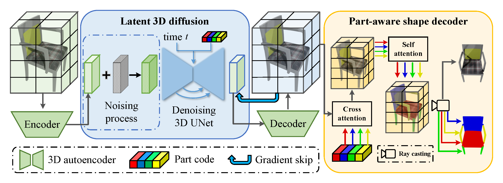
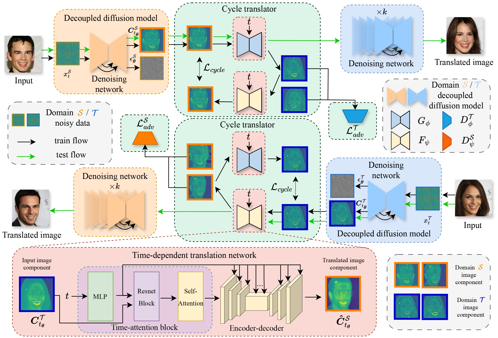
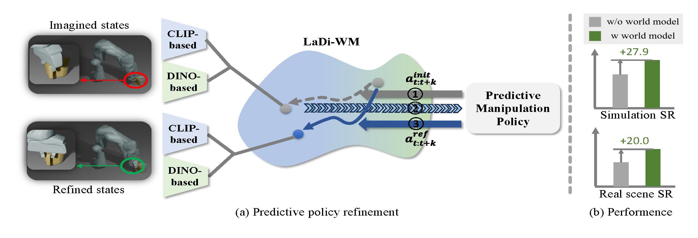
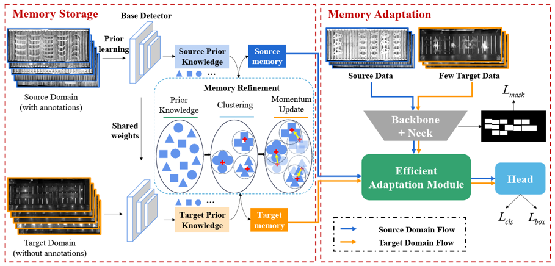

Shilong Zou
Email: zoushilong AT nudt.edu.cnGitHub I am currently pursuing the master's degree at the National University of Defense Technology advised by Prof. Kai Xu. and Prof. Chenyang Zhu. I received the bachelor's degree from the University of Dalian Maritime University, Dalian, 2023. My research lies at the intersection of robotics, computer vision, tactile sensing, and deep learning.
News
- [05/2025] 🎉🎉 One paper was accepted by TVCG 2025!
- [05/2025] 🎉🎉 Our AEG-bot project page was accessible at link.
Papers (*indicates equal technical contribution)
Full List
Code Release Progress: 17 / 20 (85.0%).

Part-aware Shape Generation with Latent 3D Diffusion of Neural Voxel Fields
Yuhang huang, Shilong Zou, Xinwang Liu, Kai Xu
IEEE Transactions on Visualization and Computer Graphics (TVCG), 2025
[Paper] [Code] [Website]
Yuhang huang, Shilong Zou, Xinwang Liu, Kai Xu
IEEE Transactions on Visualization and Computer Graphics (TVCG), 2025
[Paper] [Code] [Website]

CycleDiff: Cycle Diffusion Models for Unpaired Image-to-image Translation
Shilong Zou*, Yuhang huang*, Renjiao Yi, Chenyang Zhu, Kai Xu
IEEE Transactions on Image Processing (TIP Under Review), 2025
[Paper] [Code] [Website]
Shilong Zou*, Yuhang huang*, Renjiao Yi, Chenyang Zhu, Kai Xu
IEEE Transactions on Image Processing (TIP Under Review), 2025
[Paper] [Code] [Website]

LaDi-WM: A Latent Diffusion-based World Model for Predictive Manipulation
Yuhang huang, Jiazhao Zhang, Shilong Zou, Xinwang Liu, Ruizhen Hu, Kai Xu
Arxiv, 2025
[Paper] [Code] [Website]
Yuhang huang, Jiazhao Zhang, Shilong Zou, Xinwang Liu, Ruizhen Hu, Kai Xu
Arxiv, 2025
[Paper] [Code] [Website]

*
Yuhang huang*, Shilong Zou*, Xinwang Liu, Kai Xu
IEEE Transactions on Industrial Informatics (TII Under Review), 2025
[Paper] [Code] [Website]
Yuhang huang*, Shilong Zou*, Xinwang Liu, Kai Xu
IEEE Transactions on Industrial Informatics (TII Under Review), 2025
[Paper] [Code] [Website]
Projects (*indicates equal technical contribution)
Full List
Code Release Progress: 17 / 20 (85.0%).
AEG-bot: A mobile humanoid robot for Household Rearrangement
Wenhao Li*, Shilong Zou*, Zhinan Yu*, Zheng Zhou*, Wenxuan Li, Chenyang Zhu, Ruizhen Hu, Kai Xu
[Website] [Code]
Wenhao Li*, Shilong Zou*, Zhinan Yu*, Zheng Zhou*, Wenxuan Li, Chenyang Zhu, Ruizhen Hu, Kai Xu
[Website] [Code]
Honors and Awards
Received more than 20 scholarships and grants totaling more than 100,000 RMB
- [01/2025] Outstanding Second Prize Scholarship of National University of Defense Technology (Top 3%)
- [12/2023] Starting Point First Prize Scholarship of National University of Defense Technology (Top 3%)
- [12/2024] Outstanding student of National University of Defense Technology (Top 3%)
- [08/2023] Outstanding College Student Party Member Pacesetters of Liaoning Province (10 in total in the province)
- [05/2023] Outstanding Graduates of Liaoning Province (Top 3%)
- [10/2022] "Top Ten College Students" and "President's Scholarship" of Dalian Maritime University (10 people in the school)
- [05/2023] Star of "Youthful Character" of Dalian Maritime University (1 people in the school)
- [11/2022] "Pioneer of Science and Technology Innovation of COSCO Shipping" of Dalian Maritime University (10 people in the school)
- [10/2022] Xiaomi Extraordinary Scholarship (5 people in the school)
⬆ scrollable
Competition Awards
Received more than 70 awards at international, national, provincial, and university level or above

National First Prize in the China College Students Computer Design Competition (only two teams in China)
Haobin Wang, Shilong Zou, Mengyue Deng
China College Students Computer Design Competition
Haobin Wang, Shilong Zou, Mengyue Deng
China College Students Computer Design Competition
Others (Selected)
- [07/2022] National First Prize in the National Undergraduate Transportation Science and Technology Competition
- [10/2021] National First Prize in the National College Business Elite Challenge
- [12/2020] National Second Prize in the National College Students Mathematics Competition
- [11/2023] Third Prize of “Huawei Cup” 20th China Graduate Student Mathematical Modeling Competition at National Level
⬆ scrollable
Education
M.S. in Computer Vision and Robotics
School of Computer Science
National University of Defense Technology
School of Computer Science
National University of Defense Technology
2023 - present
Bachelor of Engineering
School of Information Science and Technology
Served as a squadron study committee member
Dalian Maritime University
School of Information Science and Technology
Served as a squadron study committee member
Dalian Maritime University
2019 - 2023